CMP03 — SIP vs FD: Aapka Paisa Kahan Badhega Behtar?
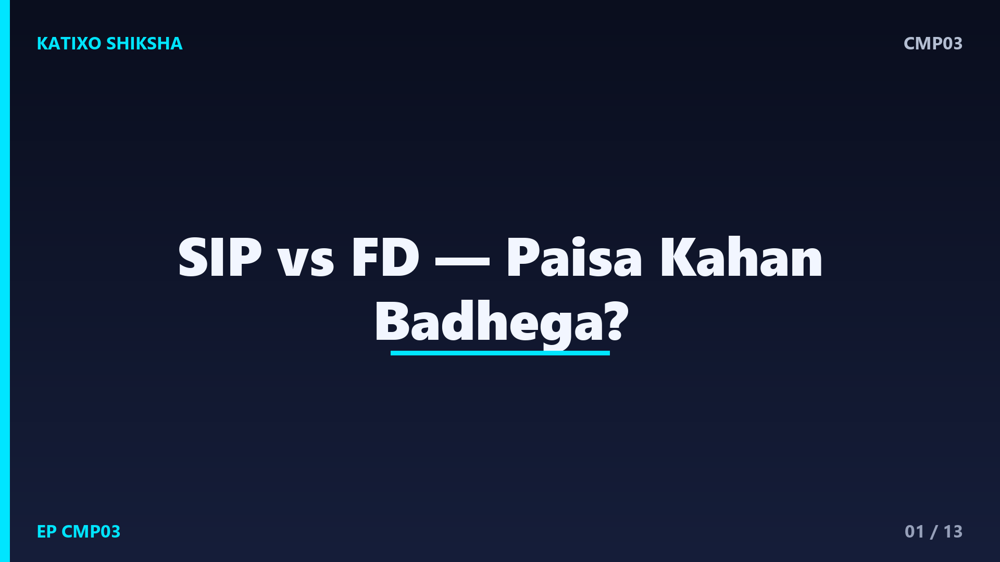
Slide 1दोस्तों, जब भी हाथ में थोड़े पैसे बचते हैं, तो एक बड़ा सवाल आता है — इन्हें कहाँ रखें कि बढ़ें भी और safe भी रहें? कोई कहता है FD करवा लो, बिल्कुल safe है, तो कोई कहता है SIP शुरू करो, ज़्यादा बढ़ेगा। आप confuse हो जाते हो। Katixo KhojLab की इस comparison episode में हम SIP यानी mutual fund की monthly investment, और FD यानी Fixed Deposit, दोनों को आसान भाषा में समझेंगे, फ़ायदे-नुक़सान देखेंगे, और बताएँगे किसके लिए क्या सही है। ध्यान दें — ये general info है, financial advice नहीं।
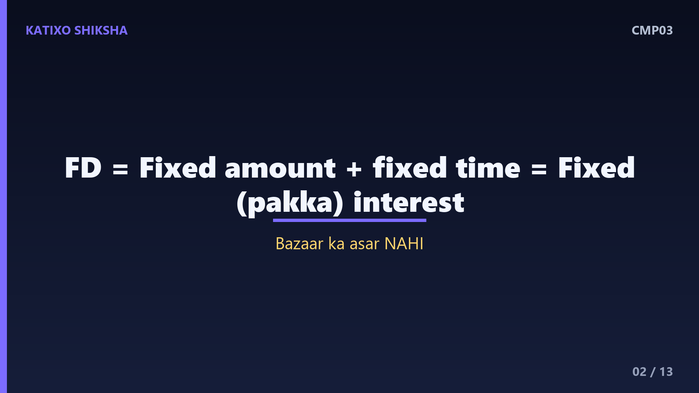
Slide 2पहले FD समझते हैं, जो सबसे पुराना और भरोसेमंद तरीक़ा है. FD यानी Fixed Deposit — आप bank में एक तय रक़म, एक तय समय के लिए जमा कर देते हो, जैसे एक साल या पाँच साल। बदले में bank आपको एक तय यानी fixed ब्याज देता है, जो पहले से पक्का होता है। यानी आपको पहले से पता होता है कि अंत में कितना पैसा मिलेगा। बाज़ार ऊपर जाए या नीचे, इससे आपके FD पर कोई फ़र्क़ नहीं पड़ता। यही इसकी सबसे बड़ी ताक़त है — पूरी certainty और सुरक्षा।
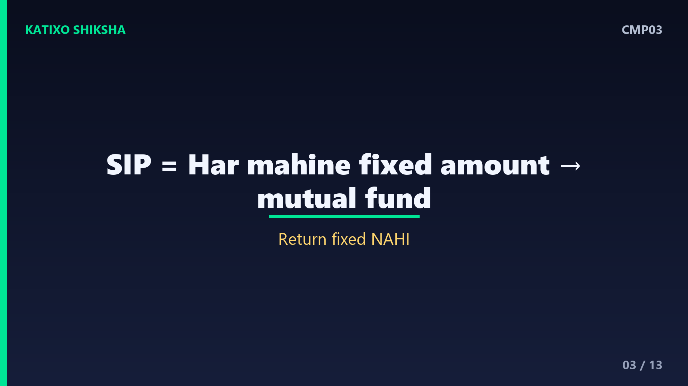
Slide 3अब SIP समझो. SIP यानी Systematic Investment Plan — इसमें आप हर महीने एक तय रक़म, जैसे पाँच सौ या दो हज़ार रुपये, एक mutual fund में डालते हो। ये पैसा fund manager शेयर बाज़ार या bonds में invest करता है। इसका return पहले से fixed नहीं होता — बाज़ार अच्छा चले तो ज़्यादा, गिरे तो कम। यानी SIP में जोखिम है, पर लंबे समय में आम तौर पर FD से ज़्यादा बढ़ने की संभावना भी। याद रहे — mutual fund बाज़ार के जोखिम के अधीन हैं।
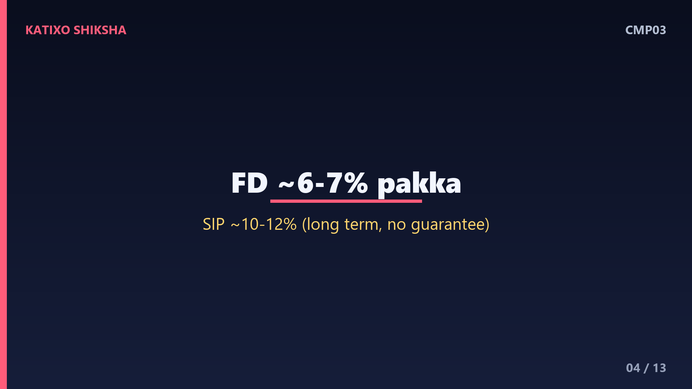
Slide 4अब सबसे बड़ा फ़र्क़ — return और जोखिम का. FD में return तय और सुरक्षित, पर आम तौर पर कम — मोटे तौर पर सालाना छह से सात प्रतिशत के आसपास, जो समय और bank से बदलता है। SIP में return तय नहीं, पर लंबे समय में equity mutual fund अक्सर सालाना दस से बारह प्रतिशत के आसपास दे सकते हैं — हालाँकि ये गारंटी नहीं, और बीच में पैसा घट भी सकता है। यानी FD देता है शांति, SIP देता है बढ़ने का मौक़ा, बदले में थोड़ा जोखिम।
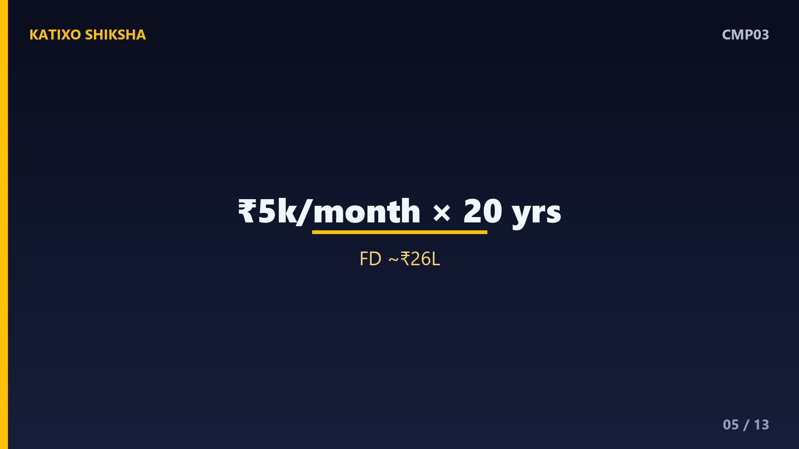
Slide 5अब असली जादू देखो — compounding और लंबे समय का असर. मान लो आप हर महीने पाँच हज़ार रुपये बीस साल तक डालते हो, यानी कुल बारह लाख रुपये अपनी जेब से। FD जैसे करीब सात प्रतिशत पर ये बढ़कर लगभग छब्बीस लाख के आसपास हो सकता है। वहीं SIP में, अगर लंबे समय में करीब बारह प्रतिशत मिले, तो यही पैसा लगभग पचास लाख तक पहुँच सकता है। फ़र्क़ बहुत बड़ा है। पर याद रहे — ये सिर्फ़ अनुमान हैं, SIP का असली return घट-बढ़ सकता है।
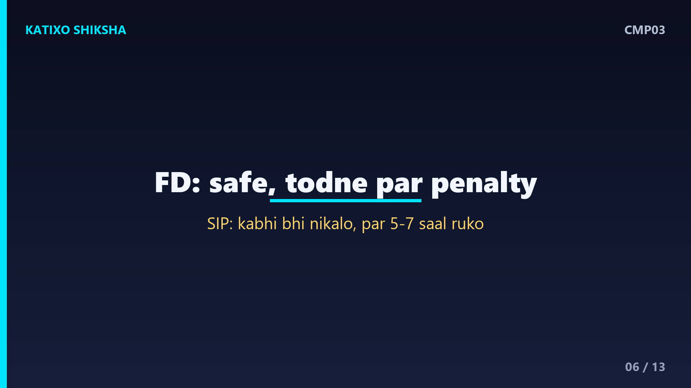
Slide 6अब safety और liquidity की बात. FD लगभग पूरी तरह safe है, और bank में जमा पैसे पर एक तय limit तक सरकारी बीमा भी होता है। ज़रूरत पड़ने पर आप FD समय से पहले तोड़ भी सकते हो, हालाँकि उस पर थोड़ा penalty लग सकता है। SIP में पैसा कभी भी निकाला जा सकता है, पर अगर बाज़ार उस वक़्त नीचे हो तो आपको नुक़सान में बेचना पड़ सकता है। इसीलिए SIP का असली फ़ायदा तभी है जब आप पैसे को लंबे समय तक, कम से कम पाँच-सात साल छोड़ सको।
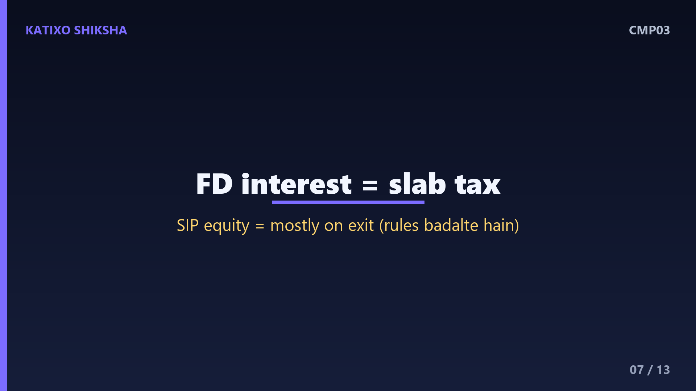
Slide 7अब tax का पहलू, क्योंकि असली return tax के बाद ही समझ आता है. FD पर मिलने वाला ब्याज आपकी आमदनी में जुड़कर आपके tax slab के हिसाब से टैक्स लगता है — यानी ज़्यादा कमाने वालों के हाथ में FD का असली return और भी कम रह जाता है। SIP में equity fund पर tax आम तौर पर तभी लगता है जब आप पैसा निकालो, और long term में इसकी दरें अक्सर कम होती हैं। टैक्स के नियम समय-समय पर बदलते रहते हैं, इसलिए निवेश से पहले current नियम ज़रूर check करें।
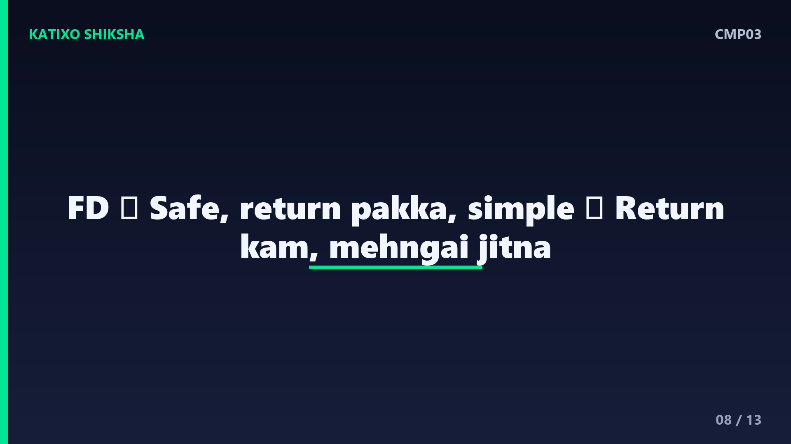
Slide 8अब FD के फ़ायदे और नुक़सान. फ़ायदे — पूरी तरह safe, return पहले से तय, समझने में बहुत आसान, और बुज़ुर्गों के लिए बढ़िया जिन्हें नियमित और पक्की आमदनी चाहिए। नुक़सान — return कम, और कई बार महँगाई जितना ही या उससे थोड़ा ही ऊपर, यानी आपके पैसे की असली ख़रीदने की ताक़त धीरे बढ़ती है। तो FD पैसे को सुरक्षित रखने के लिए बढ़िया है, पर उसे तेज़ी से बढ़ाने के लिए उतना असरदार नहीं।
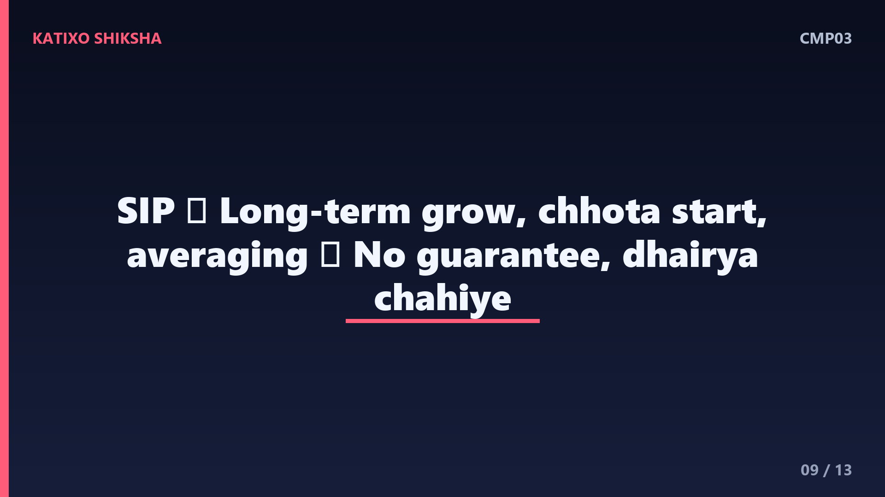
Slide 9अब SIP के फ़ायदे और नुक़सान. फ़ायदे — लंबे समय में ज़्यादा बढ़ने की संभावना, हर महीने थोड़े-थोड़े पैसे से शुरू, और बाज़ार ऊपर-नीचे होने पर औसत क़ीमत का फ़ायदा, जिसे rupee cost averaging कहते हैं। नुक़सान — return की कोई गारंटी नहीं, बीच में पैसा घट सकता है, और इसके लिए धैर्य चाहिए। घबराकर गिरते बाज़ार में SIP बंद कर देना सबसे बड़ी गलती होती है। SIP का फ़ायदा उन्हीं को मिलता है जो लंबे समय तक टिके रहते हैं।
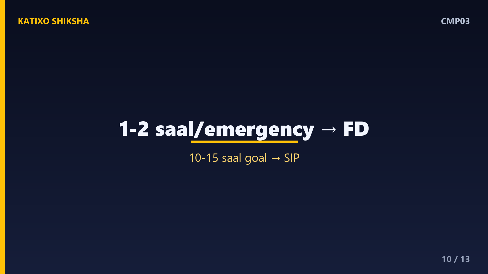
Slide 10तो किसके लिए क्या सही? FD सही है — अगर आपको पैसा एक-दो साल में चाहिए, या आप बिल्कुल जोखिम नहीं ले सकते, या आप बुज़ुर्ग हो जिन्हें पक्की आमदनी चाहिए। जैसे — emergency fund या बच्चे की अगले साल की fees, ये FD में रखो। SIP सही है — अगर आपका लक्ष्य लंबा है, जैसे retirement या बच्चे की उच्च शिक्षा दस-पंद्रह साल बाद, और आप बीच के उतार-चढ़ाव सह सकते हो। यानी मक़सद और समय से तय करो, ना कि सुनी-सुनाई बातों से।
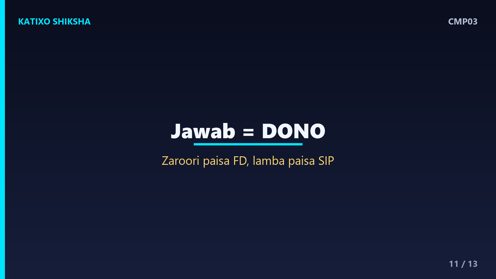
Slide 11एक समझदारी की बात — ये लड़ाई या-या की नहीं है. ज़्यादातर लोगों के लिए सही जवाब है — दोनों। अपने ज़रूरी और जल्दी चाहिए वाले पैसे, और emergency fund, FD या safe जगह रखो। और जो पैसा लंबे समय तक नहीं चाहिए, उसे SIP में बढ़ने दो। इस तरह आपको FD की सुरक्षा और SIP का grow होने का मौक़ा, दोनों मिल जाते हैं। यही संतुलन समझदार निवेश की पहचान है — सब अंडे एक टोकरी में मत रखो।
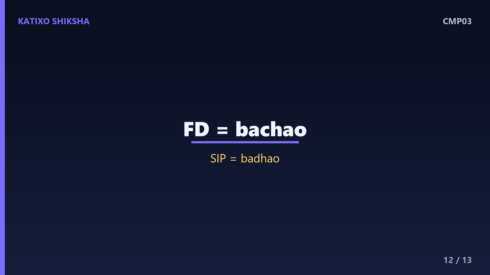
Slide 12एक quick recap. FD — पूरी तरह safe, return तय पर कम, छोटे समय और जोखिम ना लेने वालों के लिए। SIP — जोखिम है पर लंबे समय में ज़्यादा बढ़ने का मौक़ा, लंबे लक्ष्यों के लिए। FD पैसे को बचाता है, SIP उसे बढ़ाता है। सबसे अच्छा तरीक़ा अक्सर दोनों का मेल है — अपने लक्ष्य और समय के हिसाब से बाँटो। और हमेशा याद रखो — mutual fund बाज़ार के जोखिम के अधीन हैं, निवेश से पहले सोच-समझ लें।
Slide 13तो दोस्तों, अब SIP और FD का पूरा फ़र्क़ साफ़ है, और अगली बार कोई पूछे तो आप समझदारी से जवाब दे पाओगे। याद रखो — कोई भी option अपने आप में अच्छा या बुरा नहीं, सही वही है जो आपके लक्ष्य से मेल खाए। अगर ये comparison काम आया तो Katixo KhojLab subscribe karein, घंटी दबाएँ, और परिवार-दोस्तों के साथ share करें। और एक बार फिर — ये general info है, financial advice नहीं, अपने पैसे का फ़ैसला सोच-समझकर या किसी जानकार से सलाह लेकर करें। मिलते हैं अगली episode में।